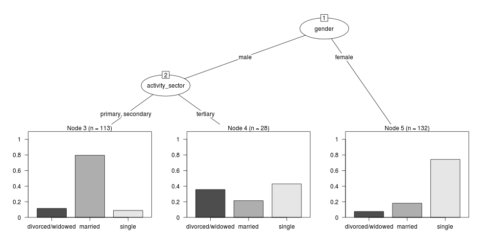

Transformations Survey Tools
Table of Contents
- 1 Introduction
- 2 Functions
- 3 Load
- 4 Clean
- 5 Do
- 5.1 Misclassification Error Rate for Classification Trees
- 5.2 Deviance Based Measures of Descriptive Power for Classification Trees
- 5.2.1 Computing-and-using-deviance-with-classification-trees-Ritschard, G. (2006).
- 5.2.2 sample-tree-data
- 5.2.3 Reproduce the figure from the paper
- 5.2.4 One row per case or using weights?
- 5.2.5 Chisquare test of deviance for Classification trees
- 5.2.6 Check This: R function to calculate for classification trees
- 5.2.7 R-tree.chisq
- 5.2.8 R code
- 5.2.9 test-tree.chisq
- 5.2.10 main-tree-model
1 Introduction
################################################################ # This is documentation for tools I'm using to analyse survey data # about Transformational Adaptation, and an associated R package I'm # developing to build new tools. require(devtools) install_github("TransformSurveyTools", "ivanhanigan") require(TransformSurveyTools)
The structure of this document follows Reichian LCFD approach.
2 Functions
2.1 foreign
################################################################ # name:foreign require(foreign)
2.2 TreeTools
################################################################ require(tree) require(rpart) require(party) require(partykit)
3 Load
3.1 read.spss
################################################################ # name:main filename <- "fname.sav" analyte <- read.spss(filename, to.data.frame=T) # ignore warnings # str(analyte) # names(analyte) variable_labels <- attributes(analyte)$variable.labels
4 Clean
4.1 ReportTools: Descriptive Statistics
A really important aspect to analysing survey data is a table of descriptive statistics. Luckily the reporttools package is here to help. The result of the following code is a LaTeX report which you can see in the file
4.1.1 report-code
system.file(file.path("doc", "report.pdf"), package = "TransformSurveyTools")
4.1.2 all variables table
################################################################ # func if(!require(reporttools)) install.packages("reporttools"); require(reporttools) require(devtools) install_github("TransformSurveyTools", "ivanhanigan") require(TransformSurveyTools) # load fpath <- system.file(file.path("extdata", "civst_gend_sector_full.csv"), package = "TransformSurveyTools") analyte <- read.csv(fpath) analyte$random <- rnorm(nrow(analyte), 0 , 1) for(i in 1:75) { analyte[,ncol(analyte) + 1] <- rnorm(nrow(analyte), 10 , 20) } names(analyte) str(analyte) data_continuous <- numeric(0) for(i in 1:length(names(analyte))) { if(is.numeric(analyte[,i])) { data_continuous <- c(data_continuous, i) } } # clean str(analyte[,data_continuous]) str(analyte[,-data_continuous]) # do sink('inst/doc/tab4.tex') tableContinuous(vars = analyte[,data_continuous], stats = c("n", "min", "mean", "median", "max", "iqr", "na"), cap = "Table of continuous variables.", lab = "tab:table4", caption.placement = "top", longtable = TRUE, add.to.row = list(pos = list(0), command = "\\hline \\endhead ")) sink() x.big <- analyte[,-data_continuous] sink('inst/doc/tab5.tex') tableNominal(vars = x.big, cap = "Table of nominal variables", vertical = FALSE, lab = "tab:table5", longtable = TRUE, caption.placement = "top") sink()
4.2 Recoding: Trichotomise
4.3 Reshape: To Long
4.4 Reshape: To Wide
4.5 Summarise
5 Do
5.1 Misclassification Error Rate for Classification Trees
5.2 Deviance Based Measures of Descriptive Power for Classification Trees
5.2.1 Computing-and-using-deviance-with-classification-trees-Ritschard, G. (2006).
I'm reading Ritschard, G. (2006). Computing and using the deviance with classification trees. In Compstat 2006 - Proceedings in Computational Statistics 17th Symposium Held in Rome, Italy, 2006. Retrieved from http://link.springer.com/chapter/10.1007%2F978-3-7908-1709-6_5
This is implemented in SPSS code. I'll try to develop R code to do these tests.
First I'll get the data out of their paper and fit the tree in figure 1
5.2.2 sample-tree-data
######################################### # func require(rpart) require(partykit) # load civst_gend_sector <- read.csv(textConnection( "civil_status gender activity_sector number_of_cases married male primary 50 married male secondary 40 married male tertiary 6 married female primary 0 married female secondary 14 married female tertiary 10 single male primary 5 single male secondary 5 single male tertiary 12 single female primary 50 single female secondary 30 single female tertiary 18 divorced/widowed male primary 5 divorced/widowed male secondary 8 divorced/widowed male tertiary 10 divorced/widowed female primary 6 divorced/widowed female secondary 2 divorced/widowed female tertiary 2 "),sep = "") # save this for use later dir.create("inst/extdata", recursive=T) write.csv(civst_gend_sector, "inst/extdata/civst_gend_sector.csv", row.names = F) # clean str(civst_gend_sector) # do fit <- rpart(civil_status ~ gender + activity_sector, data = civst_gend_sector, weights = number_of_cases, control=rpart.control(minsplit=1)) # NB need minsplit to be adjusted for weights. summary(fit) # report plot(fit, margin=.1) text(fit, use.n = TRUE) title("fit") # nicer plots png("images/fit1.png", 1000, 480) plot(as.party(fit)) dev.off()
5.2.3 Reproduce the figure from the paper
The figure in the paper can be checked against our results (and also the improved plot from the party package might be used).

5.2.4 One row per case or using weights?
Using the case weights like above is convenient especially when datasets are very large, but caused problems in model fitting for me (tree failed to compute a deviance when done this way but succeeded with a dataset expanded so the data.frame is transformed into one in which each row is an observation.
################################################################ # name:reassurance-re-weights # just to reasure myself I understand what case weights do, I'll make # this into a survey dataset with one row per respondent df <- as.data.frame(matrix(NA, nrow = 0, ncol = 3)) for(i in 1:nrow(civst_gend_sector)) { # i <- 1 n <- civst_gend_sector$number_of_cases[i] if(n == 0) next for(j in 1:n) { df <- rbind(df, civst_gend_sector[i,1:3]) } } # save this for use later write.csv(df, "inst/extdata/civst_gend_sector_full.csv", row.names = F) # clean nrow(df) str(df) fit1 <- rpart(civil_status ~ gender + activity_sector, data = df) summary(fit1) # report par(mfrow=c(1,2), xpd = NA) plot(fit) text(fit, use.n = TRUE) title("fit") plot(fit1) text(fit1, use.n = TRUE) title("fit1") # great these are the same which is what we'd hoped to see
5.2.5 Chisquare test of deviance for Classification trees
I want to use the deviance as well as the misclassification error rate for measuring the descriptive power of the tree. Using the tree package we can access the deviance of the fitted Classification tree. Ripley's tree package is the only one I found to give me deviance for classification trees, the other packages only return this for regression trees.
If we look at the reduction in deviance between the Null model and the fitted tree we can say that the tree explains about XYZ% of the variation. We can also test if this is a statistically significant reduction (based on a chi-squared test), but should also comment about how much explanation this is in practical terms.
5.2.6 TODO Check This: R function to calculate for classification trees
The Ritschard (2006) paper (with SPSS code) describes a complicated method that includes Needing to retrieve for each case:
- leaf number and
- profile number
I really want to use the deviance as well as the misclassification error rate for measuring the descriptive power of the tree. Ripley's tree package is the only one I found to give me deviance for classification trees.
The Ritschard papers suggest nice methods to test differences between nested trees ie testing the difference with the root node with a Chi-square statistic (equivalent of the usual method used in logistic regression).
Is this method employed widely in analysing survey data? I haven't turned up many references to Ritschard since he wrote these.
So let's start simple first. The following code follows the simpler approach:
- Take the difference in the deviance for the models (less complex model minus more complex model)
- Take the difference in degrees of freedom for the models
- difference between less complex and more complex model follows chi-square distribution
5.2.7 R-tree.chisq
5.2.8 R code
################################################################ # name:tree.chisq tree.chisq <- function(null_model, fitted_model) { # TODO check if these are tree model class fit_dev <- summary(fitted_model)$dev null_dev <- summary(null_model)$dev dev <- null_dev - fit_dev df <- summary(fitted_model)$size - summary(null_model)$size sig <- 1 - pchisq(dev, df) sprintf("Reduction in deviance is %s percent, p-value is %s (based on a chi-squared test)", ((null_dev - fit_dev) / null_dev) * 100, sig) }
5.2.9 test-tree.chisq
# func require(tree) require(devtools) install_github("TransformSurveyTools", "ivanhanigan") require(TransformSurveyTools) # load locally # fpath <- "inst/extdata/civst_gend_sector_full.csv" # or via package fpath <- system.file("extdata", "civst_gend_sector_full.csv", package="TransformSurveyTools") civst_gend_sector <- read.csv(fpath) # clean str(civst_gend_sector) # do variables <- names(civst_gend_sector) y_variable <- variables[1] x_variables <- variables[-1] # NULL form0 <- reformulate("1", response = y_variable) form0 model0 <- tree(form0, data = civst_gend_sector, method = "class") print(model0) # FIT form1 <- reformulate(x_variables, response = y_variable) form1 model1 <- tree(form1, data = civst_gend_sector, method = "class") print(model1) summary(model1) plot(model1) text(model1,pretty = 0) tree.chisq(null_model = model0, fitted_model = model1)
5.2.10 main-tree-model
source("tests/test-tree.chisq.r")